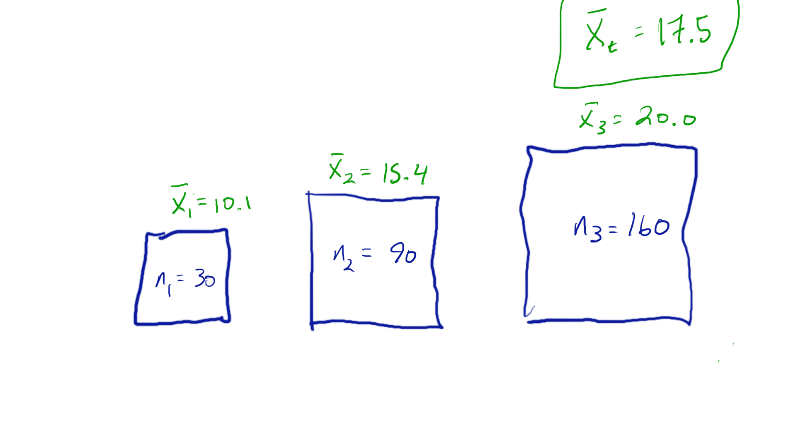
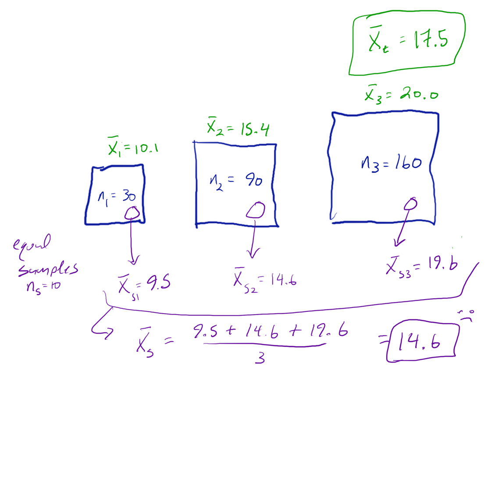
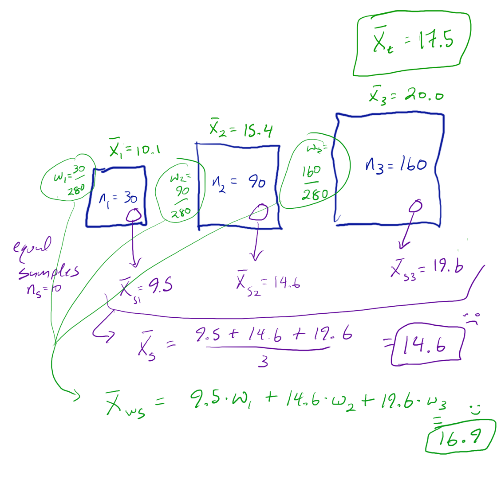
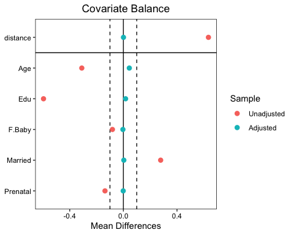
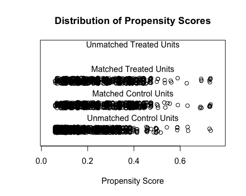

Why weighting?
If the treated and untreated groups contain different kinds of people, their outcome difference mixes treatment with those differences. Weighting asks each group to represent the same population before we compare them.
Adapted from Andy Wilson's Causal Methods in Public Health, Spring 2026, lectures 4a and 4b. The original lecture sketches are reused below.
A sample can give some people too much of a say
Imagine three cities. Their populations are 30, 90, and 160, and their mean incomes differ. We want the average income across all 280 people. An average of the three city means gives each city one third of the answer, although the cities contain very different shares of the population.

Now sample ten people from each city
Every city supplies the same number of observations. A sampled resident of the smallest city now has more influence than their population share warrants. A resident of the largest city has less.


At the person level, the sampling probabilities are 10/30, 10/90, and 10/160. Their inverses are 3, 9, and 16. Each sampled person represents that many people from their city. Divide the weighted outcome total by the weighted person total to get the same 16.91.
Weighting changes representation. It does not change anyone's measured income. The weighted estimate is closer to 17.5 here, but still differs because the small samples do not exactly reproduce their cities' means. Weighting does not promise an exact answer in every sample.
Who is underrepresented in each treatment group?
In the opening lesson, severity affects both the chance of treatment and the outcome. The treated group contains more high-severity people. Comparing the two groups directly therefore compares different severity mixes.
We need a probability for the process that produced those groups. The propensity score is the chance of receiving treatment given a person's pretreatment covariates.
- A
- Treatment received: 1 for treated, 0 for untreated.
- X
- The pretreatment covariates we use for adjustment, such as severity.
- g(X)
- The propensity score. Andy's lectures call it e(L); the course calls it g(X). These denote the same object.
It is a probability of treatment, not a probability of the outcome. In practice we estimate it from a treatment model, for example logistic regression. We choose adjustment variables using causal knowledge; adding every available variable can include a mediator or collider and create a different problem.
Use the probability of the treatment actually received
If g(X) = 0.25, a treated person has weight 4. An untreated person has weight 1/0.75, about 1.33. The unusual treatment history carries more relative weight. These unstabilized weights are at least 1; “downweight” means less influence relative to the other observations, not necessarily a raw weight below 1.
Make both groups represent the same severity mix
This is a separate, exact teaching population: 100 people in expectation, two severity groups, and a treatment benefit of 2 for everyone. Without treatment, the mean outcome is 2 in the low-severity group and 5 in the high-severity group. The sliders change who receives treatment; they do not change those outcomes.
Start with half high severity, a treatment chance of 0.2 among low-severity people, and 0.8 among high-severity people. There are 10 low-severity and 40 high-severity people in the treated group in expectation. Their inverse weights are 5 and 1.25. The weighted totals become 50 and 50. The untreated group returns to that same mix.
Counts are exact expected frequencies under the stated population law, not a random sample of 100 real patients. The outcome comparison uses normalized weighted means within each arm. Weighted totals are representation, not new independent patients. Effective sample size is a weight-concentration diagnostic, not an actual count of people.
Why does the treatment mechanism cancel?
The observed joint distribution factors as f(X) × f(A | X) × f(Y | A, X). Dividing by the correct treatment probability removes the f(A | X) factor from the weighted distribution. After normalization, both treatment arms have the same f(X). The outcome distribution within each (A, X) cell stays the same.
Stabilized weights use P(A = a) / P(A = a | X). They retain the original overall treatment proportions while still giving both arms the target covariate distribution in this population calculation. Multiplying all weights in one arm by the same constant leaves its normalized mean and effective sample size unchanged.
Connect this to the opening picture. Comparing outcomes within severity and averaging over a common severity distribution is standardization. Weighting reconstructs that common distribution using the observed treatment histories. They express the same identified target at the population level. With fitted models and finite samples, their estimates can differ.
Now in R: estimate the score, weight, and check balance
The base R example constructs the starting teaching table, fits a logistic treatment model, and checks the weighted severity mix. No packages or external dataset are required.
ps <- glm(A ~ X, family = binomial())
g <- predict(ps, type = "response")
w <- ifelse(A == 1, 1/g, 1/(1-g))
ipw <- weighted.mean(Y[A == 1], w[A == 1]) -
weighted.mean(Y[A == 0], w[A == 0])For this invented table the observed mean difference is 3.80, and the weighted difference is 2.00. The high-severity shares move from 0.80 and 0.20 to 0.50 in both arms. This checks representation and point estimation; it does not compute a standard error for an analysis with estimated weights.
We calculated weights. Did they do their job?
A fitted propensity model is not guaranteed to balance a finite sample. Compare the measured covariates before and after weighting. Look at distributions as well as means, and inspect overlap and the largest weights. Predicting treatment well is not the same objective as obtaining a useful balanced comparison.

A standardized mean difference divides the difference in group means by a reference standard deviation. Keep that reference scale fixed when comparing before and after adjustment. A value such as |SMD| < 0.1 is a common diagnostic benchmark, not a certificate that an effect is causal. Balance on measured variables does not test whether an important common cause was unmeasured.
Rare treatment histories carry a lot of weight
A treated person with g(X) = 0.02 has weight 50. If only a few people provide the evidence for a large part of the target population, the estimate can become unstable. Try the rare-history button above and watch the effective sample sizes fall even though the covariate mix balances in expectation.
If a target stratum has no chance of one treatment, weighting has no observations to upweight for that treatment. That is a population positivity failure. Truncating a large weight can change balance and bias; it does not create missing support.
Another use of the propensity score: matching
Lecture 4b also uses the score to select comparable treated and untreated people. Weighting changes how much observations count; matching selects or weights comparable sets. Matching centered on treated people commonly targets the ATT, and dropping treated people can further change the target population. Choose the target before choosing a method.

What makes the weighted comparison causal?
- Consistency: the treatment is well defined, and observed outcomes correspond to the treatment received.
- Conditional exchangeability: the adjustment covariates suffice to remove confounding of the treatment–outcome comparison.
- Positivity: each treatment needed by the target occurs with positive probability at each relevant covariate value.
For IPW estimation, we also need sufficiently accurate treatment probabilities and adequate statistical regularity. “As if randomized” describes the intended balance of measured covariates in the weighted population. Weighting does not literally randomize the original study or remove an unmeasured confounder.
Weighting comes back inside doubly robust methods
Plain IPW weights the observed outcomes. Augmented IPW, or AIPW, starts with outcome predictions and uses those same inverse treatment probabilities to weight their residuals: the observed outcomes minus their predictions.
Average those patient contributions. If the outcome model is right, the residual corrections average to zero. If the propensity model is right, the corrections can repair a wrong outcome model. This is the population intuition for double robustness: either nuisance model can be correct. It does not remove the identification assumptions, and an ordinary confidence interval needs additional conditions.
These are exact population calculations for the two-stratum world above. Omitting severity uses predicted outcomes 3 and 4. A constant propensity of 0.5 is wrong for the starting configuration; it becomes correct if both actual treatment chances are 0.5. This is an illustration of the consistency property, not a fitted-model simulation or an efficiency claim.
TMLE also uses the propensity score, through the clever covariate, to target an initial outcome fit. We will derive that operation later. Keep the motivation: do not let the people easiest to observe under a treatment decide whose effect we estimate.